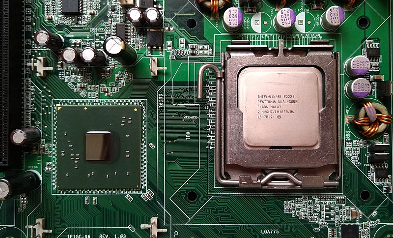
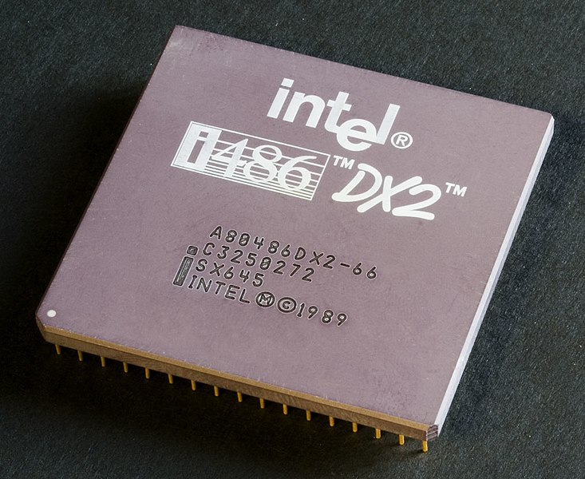
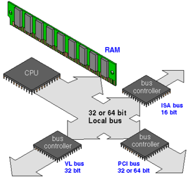
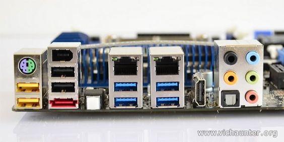
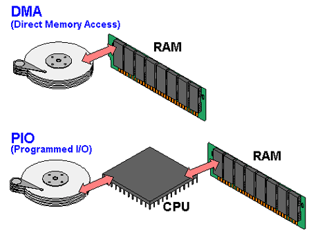
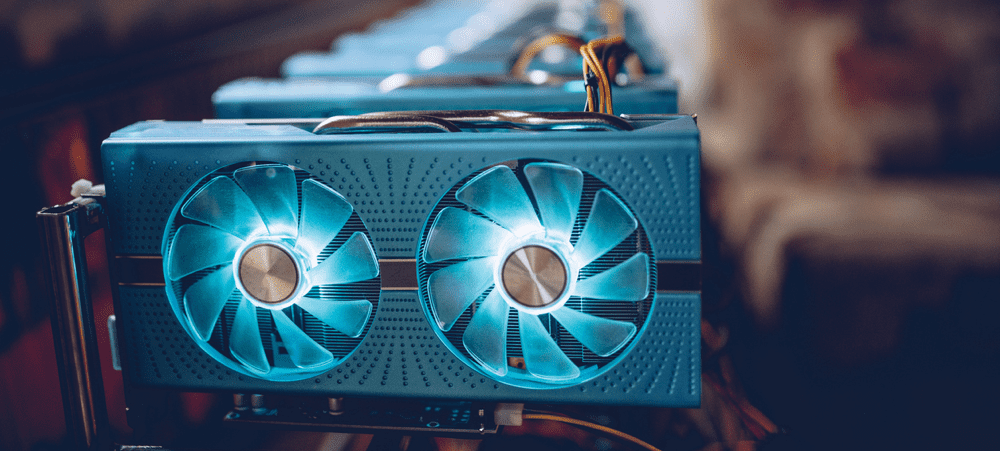

El chipset es un conjunto de circuitos integrados que se encuentra en la placa base de una computadora. Su función principal es facilitar la comunicación entre los diferentes componentes del sistema, como la CPU, la memoria, los dispositivos de entrada y salida, y otros periféricos. El chipset actúa como el "cerebro" del sistema, coordinando y controlando el flujo de datos entre los diferentes componentes.
La CPU, o Unidad Central de Procesamiento, es el componente principal de un ordenador. Es responsable de ejecutar las instrucciones de los programas y realizar cálculos. El chipset se encarga de establecer la comunicación entre la CPU y otros componentes, como la memoria y los dispositivos de entrada y salida. Además, el chipset también puede incluir funciones específicas para mejorar el rendimiento de la CPU, como la administración de energía y el control de la velocidad del reloj.
El controlador del bus es una parte del chipset que se encarga de gestionar el flujo de datos a través del bus del sistema. El bus del sistema es un canal de comunicación por el cual los datos se transfieren entre la CPU, la memoria y otros dispositivos. El controlador del bus coordina el acceso a este bus y controla la transferencia de datos entre los diferentes componentes.
Las puertas de entrada/salida (E/S) son circuitos que se encargan de gestionar la comunicación entre la CPU y los dispositivos de entrada y salida, como el teclado, el ratón, los discos duros, las impresoras, etc. Estas puertas permiten la transferencia de datos y control entre la CPU y los dispositivos externos.
El controlador de interruptores es un componente del chipset que se encarga de gestionar las interrupciones en el sistema. Una interrupción es una señal que indica a la CPU que un dispositivo o programa requiere atención inmediata. El controlador de interruptores detecta estas interrupciones y las direcciona adecuadamente para que sean atendidas por la CPU.
El controlador de acceso directo a memoria (DMA, por sus siglas en inglés) es un componente del chipset que permite la transferencia directa de datos entre la memoria y los dispositivos de entrada y salida sin la intervención de la CPU. Esto mejora la eficiencia del sistema, ya que libera a la CPU de tener que realizar estas transferencias de forma directa.
Los circuitos de temporización son componentes del chipset que se encargan de generar las señales de temporización necesarias para sincronizar las operaciones dentro del sistema. Estas señales de temporización controlan la velocidad a la que se ejecutan las instrucciones y las transferencias de datos, asegurando que todas las partes del sistema funcionen en armonía.
Los circuitos de control son componentes del chipset que se encargan de supervisar y controlar el funcionamiento de los diferentes componentes del sistema. Estos circuitos aseguran que los componentes se activen o desactiven en el momento adecuado y de acuerdo con las instrucciones de la CPU.
Los controladores de video son componentes del chipset que se encargan de gestionar la salida de video del sistema. Estos controladores se encargan de la generación de las señales de video, la gestión de la resolución y la calidad de la imagen, y la conexión con los dispositivos de visualización, como los monitores.

Las computadoras electrónicas modernas son una herramienta esencial en muchas áreas: industria,
gobierno, ciencia, educación,…, en realidad en casi todos los campos de nuestras vidas. El papel que
juegan los dispositivos periféricos de la computadora es esencial; sin tales dispositivos ésta no
sería totalmente útil. A través de los dispositivos periféricos podemos introducir a la computadora
datos que nos sea útiles para la resolución de algún problema y por consiguiente obtener el
resultado de dichas operaciones, es decir; poder comunicarnos con la computadora. La computadora
necesita de entradas para poder generar salidas y éstas se dan a través de dos tipos de dispositivos
periféricos existentes:
- Dispositivos periféricos de entrada.
- Dispositivos periféricos de salida.
Las Computadoras son una herramienta esencial, prácticamente en casi todos los campos de nuestras
vidas; es útil, ayuda a la mejora y excelencia del trabajo; lo que lo hace mucho mas fácil y
práctico En poco tiempo, las computadoras se han integrado de tal manera a nuestra vida cotidiana,
puesto que han transformado los procesos laborales complejos y de gran dificultad hacia una manera
más eficiente de resolver los problemas difíciles, buscándole una solución práctica. El papel que
juegan los dispositivos periféricos de la computadora es esencial, ya que sin tales dispositivos la
computadora no sería útil a los usuarios.
En informática, un periférico de entrada/salida o E/S (en inglés: input/output o I/O) es aquel tipo
de dispositivo periférico de un computador capaz de interactuar con los elementos externos a ese
sistema de forma bidireccional, es decir, que permite tanto que sea ingresada información desde un
sistema externo, como emitir información a partir de ese sistema. Los Dispositivos Periféricos de
entrada son todos aquellos dispositivos que permiten introducir datos o información en una
computadora para que esta los procese u ordene.
Funciones:
Un periférico de E/S es el que se utiliza para ingresar (E) datos a la computadora, y luego de ser
procesados por la unidad central de procesamiento (CPU), genera la salida (S) de información. Su
función es leer o grabar, permanente o virtualmente, todo aquello que se haga con la computadora,
para que pueda ser utilizado por los usuarios u otros sistemas.
Tipos:
Dispositivos o periféricos de comunicación entre computadoras, tales como módems y tarjetas de red,
por lo general sirven para entrada y salida. También, los dispositivos de almacenamiento de datos,
como los discos rígidos, la unidad de estado sólido, las memorias flash, las disqueteras, entre
otros, se pueden considerar periféricos de entrada/salida.
Una parte fundamental del ordenador, es su capacidad para almacenar datos. Todos los ordenadores
incluyen o pueden hacer uso diferentes sistemas de almacenamiento como microchips, la memoria RAM,
el disco duro, los dispositivos portátiles, etc.
Un dispositivo de almacenamiento tiene la función de retener datos informáticos durante un intervalo
de tiempo. Estos han ido evolucionando a lo largo de la historia con el objetivo de crear un
dispositivo lo más pequeño posible (físicamente) y con más capacidad para almacenar y tratar datos.
Nos encontramos con dos tipos de sistemas: el almacenamiento primario o principal y el
almacenamiento secundario. Con el primer tipo nos referimos a los dispositivos de almacenamiento
masivo, entre sus características principales destaca que siempre que el ordenador reciba energía
eléctrica la información es guardada en la memoria del ordenador, en caso contrario, esta se pierde.
Con el segundo tipo nos referimos a los dispositivos de almacenamiento secuencial, es decir,
almacena la información hasta que el usuario lo requiere, para lo que necesita dispositivos externos
de almacenamiento, que tienen menor capacidad que la memoria primaria, por lo que son mucho más
lentos.
Una fuente de alimentación es un componente esencial de cualquier dispositivo electrónico ya que es
ella quien se encarga de darle vida. En cualquier equipo, por pequeño que sea, siempre hay una
fuente de alimentación, aunque no la veamos.
En los ordenadores de sobremesa, la fuente de alimentación se encuentra generalmente en la parte
inferior de la torre (en cajas antiguas se encuentra en la superior), y muchas cajas de ordenador
optan por incorporar un compartimento para separarla del resto y ya de paso ocultar todos los cables
salientes de ella.
Una fuente de alimentación sirve para dar energía a un dispositivo electrónico. Siguiendo con el
tema de los ordenadores de sobremesa, la fuente de alimentación da energía a la placa base, CPU,
tarjetas gráficas, HDDs, SSDs, ventiladores, lectores de CDs. En resumen, alimenta a todo lo que
necesite energía, para ello hace uso de diferentes tipos de cables.
Las fuentes de alimentación proporcionan energía a los SSD y HDD mediante conectores SATA de
energía, y a los ventiladores mediante conectores molex de 3 o 4 pines o bien mediante la propia
placa base (que es alimentada con el conector de 24 pines ATX). De esta manera, todos los
componentes reciben energía de la fuente de alimentación. Además, las fuentes protegen a todos los
componentes mediante una gran cantidad de sistemas dedicados a ello.
Existen fuentes de alimentación que no requieren de ventilación, por lo que su refrigeración es
completamente pasiva. Estos modelos suelen ser fuentes de medio-bajo voltaje con una alta
eficiencia, para que el calor generado sea menor y se pueda llevar a cabo su disipación sin usar ni
un solo ventilador acoplado a la fuente, con los que existan en la caja serán más que suficiente.
El negocio de proveer servicios de datos es mucho más complejo que la forma en la que se dan los
tradicionales servicios, que con frecuencia se terminan involucrando o necesitando la colaboración
de terceras empresas.
- Desarrollo de nuevos mercados y productos
- Adquisición y administración de clientes
- Administración del negocio
- Administración del negocio
Definitivamente, la tecnología en general ha sido la causa principal y la acción más directa para la transformación del trabajo de las organizaciones en la posguerra del siglo XX. Tanto los bienes de capital «duros» (computadores, teléfonos, videos, facsímiles, grabadoras, etc.), como los programas y sistemas de información y comunicación en general, han incrementado enormemente la productividad y eficiencia de las organizaciones. Tenemos como ejemplos los siguientes: bases de datos en redes de todo orden y topología, sistemas de reservaciones en aerolíneas, sistemas de contabilidad y nóminas, archivos clínicos en centros de salud, sistemas de conmutación electrónica y un sin número de otras aplicaciones a procesos administrativos.

La industrialización de los servicios de tecnología de información va a redefinir el mercado en
términos de como las organizaciones evalúan, compran y seleccionan los servicios y como los
vendedores desarrollan y establecen precios de los servicios. Para lograr esta estandarización, se
requiere un enfoque hacia las soluciones genéricas y esto debe ser responsabilidad de los
proveedores, que deben de desarrollar, operar y administrar el resultado de estos genéricos de TI.
Aunque los servicios de TI están en proceso de madurez, la madurez de la industria se ha
incrementado en aspectos evidentes, como la forma en que los servicios son implementados y
administrados. La industria de la información comprende no sólo la producción y los servicios para
el procesamiento, almacenamiento y distribución de la información, sino también la producción de las
tecnologías informáticas Dentro de la industria de la información, por su alcance global y rápida
evolución tanto científico-técnica como de mercado, se destacan las TI, formadas por:
- Electrónica de semiconductores,
- Telecomunicaciones computación
- El procesamiento de datos
- Elaboración de sistemas de información
El desarrollo de estas tecnologías y de las telecomunicaciones ha hecho que los intercambios de
datos crezcan a niveles extraordinarios, simplificándose cada vez más y creando nuevas formas de
comercio, y en este marco se desarrolla el Comercio Electrónico.
Se considera “Comercio Electrónico” al conjunto de aquellas transacciones comerciales y financieras
realizadas a través del procesamiento y la transmisión de información, incluyendo texto, sonido e
imagen.